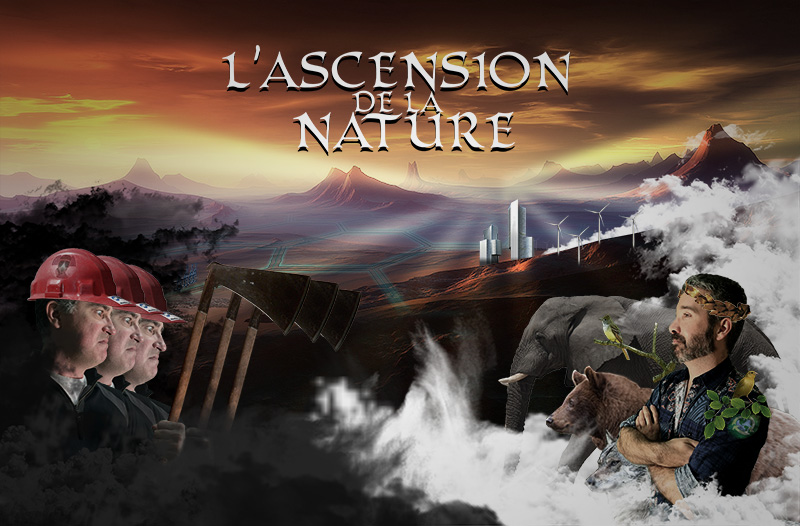

Introduction au Jeu
L'ascension de la Nature est un jeu de stratégie par tour où vous contrôlez une civilisation écologique qui tente désespérément de sauver la planète contre une civilisation rivale qui ne pense qu'à l'expansion économique et qui ne se soucie pas de l'environnement qu'elle détruit pour accomplir ses fins.
Chaque tour vous offre la possibilité de prendre vos propres décisions; élaborer des tactiques, capturer des villes, faire des alliances, attaquer des territoires et plus encore.
L'univers du jeu se déroule sur plusieurs années dans lesquelles vous pouvez choisir les technologies et les politiques sociales à développer.
Pour gagner, vous devez arrêter les Pollueurs et sauver la planète d'une destruction imminente. Seriez-vous à la hauteur?
Caractéristiques :
- Contrôler une civilisation !
- Gérer les ressources et les territoires!
- Influencer les autres nations à se joindre à vous!
- Implorer les pouvoirs de la Nature et des Animaux!
- Sauver la Terre et éradiquer la pollution!
Les Civilisations
Dans ce jeu, il y a deux factions dominantes: les Pollueurs et les Écolos. Elles possèdent des avantages et inconvénients différents, une armée différente, leur propre progression technologique et bien d'autres.
Caractéristiques
Les Pollueurs
- Expansion territorial rapide
- Collection de ressources rapide
- Grand contrôle sur la population
- Plus grande population
- Pouvoir militaire destructif
Les Écolos
- Renouvellement énergitique
- Alliances avec les animaux
- Meilleurs relations diplomatiques
- Population en bonne santé
- Pouvoir militaire defensif
Jour de la Terre
Ce jeu a été conçu dans le cadre du Jour de la Terre 2015 dans le but d'encourager les gens à faire davantage d'actions pour protéger l'environnement.
Notre but est donc de vivre de démontrer aux gens les conséquences qu'un mode de vie sans conscientisation de la nature peut apporter à long terme et comment notre vie pourrait être meilleur en adoptant de bonnes habitudes.
Une partie des profits de chaque jeu vendu ira donc à des organismes à but non lucratif qui militent pour protéger notre planète.